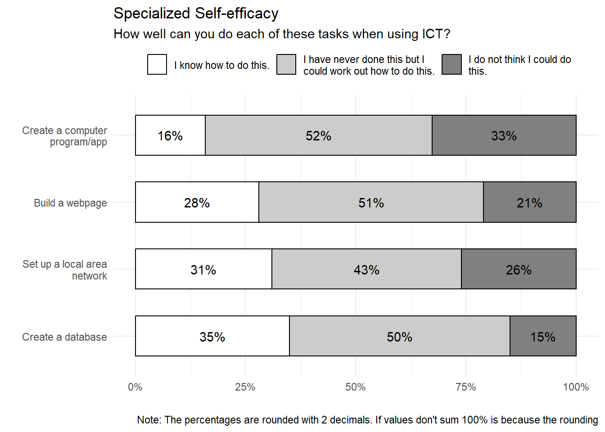
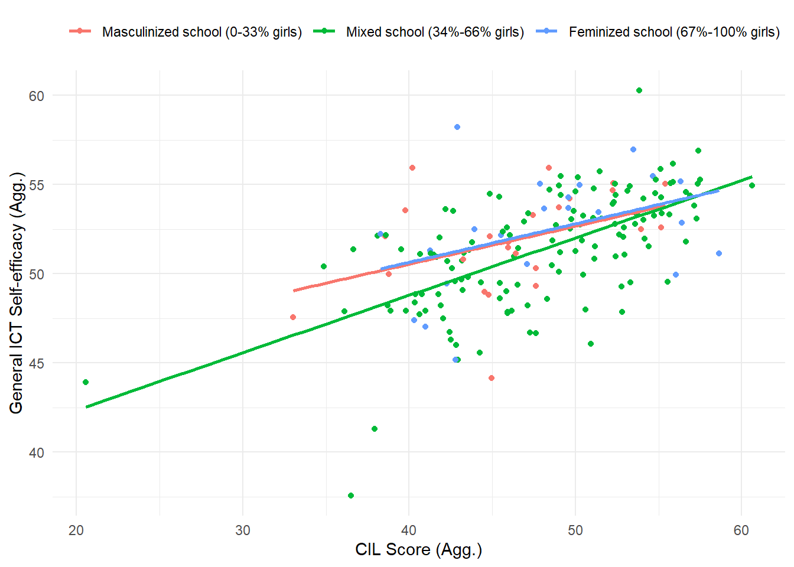

| Item | Original label | Summarised label |
|---|---|---|
| General Self-efficacy | ||
| is2g27a | Edit digital photographs or other graphic images | Edit graphic images |
| is2g27c | Write or edit text for a school assignment | Write or edit text |
| is2g27d | Search for and find relevant information for a school project on the Internet | Search and find information on internet |
| is2g27i | Create a multi-media presentation (with sound, pictures, or video) | Create multi-media presentation |
| is2g27j | Upload text, images, or video to an online profile | Upload multimedia to an online profile |
| is2g27k | Insert an image into a document or message | Insert an image into a document/message |
| is2g27l | Install a program or [app] | Install a program/app |
| is2g27m | Judge whether you can trust information you find on the Internet | Judge internet information veracity |
| Specialized Self-efficacy | ||
| is2g27b | Create a database (e.g. using [Microsoft Access ®]) | Create a database |
| is2g27e | Build or edit a webpage | Build a webpage |
| is2g27g | Create a computer program, macro, or [app] | Create a computer program/app |
| is2g27h | Set up a local area network of computers or other ICT | Set up a local area network |
Report Analysis Self-efficacy and gender differences, ICILS 2018
Introduction
The next report contains the method section and the diverse analysis made for the article of the social line of NUDOS.
Method
As an exploratory study conducted by researchers originating from Chile, our analysis focused exclusively on the Chilean subset of the ICILS 2018 dataset. The raw sample comprised 3,092 students, distributed across 175 schools. The sample was meticulously designed using a multistage stratified cluster design, ensuring that both student and school levels are representative of the broader Chilean population.
ICILS utilized various measurement instruments to collect data. Initially, participants underwent a Computer Literacy test, consisting of tasks with multiple-choice items. Based on their responses, each individual student was assigned a score for Computer and Information Literacy (CIL from now on). Subsequently, students completed a questionnaire, which inquired about their home background, values, beliefs, attitudes, and behaviors related to Computer and Information technologies. Following the questionnaire session, students responded to a Computational Thinking test (CT hereafter), featuring multiple-choice items. In Chile wasn’t applied this last test.
Variables
Sex of Student
ICT Self-efficacy (Individual level)
The ICILS student data encompasses two indices of digital self-efficacy: one for general or basic applications and the other for advanced or specialized tasks. Both indices were constructed using different items from the same battery of questions. The phrasing of the battery was as follows: ‘How well can you do each of these tasks when using ICT?’ Participants were presented with three response categories:
I do not think I could do this. I have never done this, but I could work out how to do this. I know how to do this. Due to the extended length of the labels for items related to ICT self-efficacy, we made the decision to truncate them. This modification was made to facilitate the inclusion of these labels in graphical plots, without altering the intended meaning of the phrases. The Table 1 section illustrates both the original and the summarized labels for the items comprising both indexes
Both indexes were constructed by the IEA using the Weighted Likelihood Estimation Method, where scores have a mean of 50 and a standard deviation of 10, based on equal weights for all countries. A higher index value indicates a higher level of self-efficacy.
In Chile, the General ICT self-efficacy index has a mean of 51.73, with a standard deviation of 8.87. The minium and maxium values for this index are 13 and 61.12, respectively.
For Specialized ICT self-efficacy in Chile, the mean is 51.27, with a standard deviation of 9.31. The range of minium and maxium values for this index are 30.53 and 71.01, respectively.
The Table 2 table includes missing values for each item and the total missing values for both indexes. It is important to note that the missing data presented here will not be included in the subsequent analyses as part of the N.
| Item | Missing values (n) | Proportion |
|---|---|---|
| General Self-efficacy | ||
| Edit graphic images | 102 | 3% |
| Write or edit text | 131 | 4% |
| Search and find information on internet | 136 | 4% |
| Create multi-media presentation | 142 | 5% |
| Upload multimedia to an online profile | 155 | 5% |
| Insert an image into a document/message | 191 | 6% |
| Install a program/app | 193 | 6% |
| Judge internet information veracity | 224 | 7% |
| Specialized Self-efficacy | ||
| Create a database | 102 | 3% |
| Build a webpage | 131 | 4% |
| Create a computer program/app | 136 | 4% |
| Set up a local area network | 142 | 5% |
ICT Self-efficacy (School level)
To explore the distribution of data at the school level, both self-efficacy indexes were aggregated using means. The code for constructing the aggregated variables is accessible on the GitHub repository of the study.
Computer and Information Literacy
Computer and Information Literacy (School level)
To explore the distribution of CIL at school level, the score were aggregated using means. The code for constructing the aggregated variables is accessible on the GitHub repository of the study.
Gender composition
Socioeconomics variables (Control)
Analysis
Descriptive analysis
Self-efficacy items
Figure 1 explores the distribution of responses for General ICT Self-efficacy items. Notably, across all tasks, a significant proportion of students—no less than 65%—expressed confidence in their ability to perform these tasks, while fewer than 10% reported an inability to do so. On the whole, participants demonstrated a high level of general self-efficacy.
However, subtle differences emerge when examining individual items, revealing a nuanced trend. Items associated with judging information or manipulating multimedia documents tended to yield lower levels of self-efficacy compared to those related to text documents, internet searching, and downloading of information. Specifically, creating a multi-media presentation, judging internet information veracity, and editing graphic images received the lowest scores in the positive response category (67%, 71%, and 76% respectively), while garnering the highest scores in the intermediate category (26%, 24%, and 19% respectively). On the contrary, writing or editing a text, searching and finding information, inserting an image into a document/message, and installing a program/app achieved the highest scores in the positive response category (88%, 87%, 84%, and 84% respectively), with the lowest scores in the intermediate category (10%, 10%, 12%, and 11% respectively).
This first approach suggests that the sample presents greater efficacy around operational tasks than communicative or social activites with digital technologies.
The Figure 2 illustrates the distribution of responses for items that constitute the Specialized ICT Self-efficacy index. Notably, over 85% of students confidently state their proficiency in tasks such as building a webpage or creating a computer program. However, this percentage decreases by more than 10% when it comes to tasks like creating a database or setting up a local area network. This pattern suggests that students tend to perceive a higher level of proficiency in activities related to software and webpage development, while expressing less confidence in activities centered around data manipulation or network connectivity.

Figure 3 presents mean differences in gender ICT self-efficacy by item. Notably, all items contributing to general self-efficacy exhibit statistically significant differences in favor of boys, with the exception of ‘install a program/app,’ which shows significant differences in favor of girls, and ‘judge internet information veracity,’ which does not exhibit significant differences. However, it’s important to note that the magnitude of the gender gap in all items is relatively narrow when compared to the specialized self-efficacy items.
All specialized self-efficacy items score higher than their general self-efficacy counterparts, indicating a greater proficiency in advanced computational tasks for both boys and girls Nevertheless, within specialized self-efficacy, there are notable gaps, some double or even triple than those observed in general self-efficacy. As expected, these gaps favor males and occur specifically in ‘Set up a local area network’ and ‘Create a computer program/app,’ while ‘Build a webpage’ and ‘Create a database’ show no significant gender differences.
Therefore, it can be concluded that gender differences in self-efficacy are not consistent across all dimensions of the concept but rather manifest in specific areas. Particularly in advanced self-efficacy, where two items exhibit significant gaps, while two others show no significant differences. Additionally, the overall trend suggests that girls may have a slight advantage over boys in general tasks, whereas boys demonstrate a more significant advantage in specialized technological tasks.”
Indexes distribution and gender differences
Table 3 explores the distribution of the key variables utilized in this study based on gender. The results indicate that girls exhibit a significant mean advantage over boys in the Computer Literacy test. Conversely, boys demonstrate a significant mean advantage in specialized self-efficacy. Notably, there are no significant differences in general ICT self-efficacy. This allow to speculate that the overestimation of boys and underestimation of girls is primarily occurring in specialized ICT tasks.
It is essential to mention that both self-efficacy indexes have, at least, 93 missing values.
| Variables | N | Overall, N = 3,0921 | Boy, N = 1,5191 | Girl, N = 1,5731 | p-value2 |
|---|---|---|---|---|---|
| Computer and Information Literacy- 1ST PV | 3,092 | 482 (88) | 477 (89) | 488 (87) | <0.001 |
| ICT self-efficacy regarding the use of general applications | 2,999 | 52 (9) | 51 (9) | 52 (9) | 0.057 |
| ICT self-efficacy regarding the use of specialist applications | 2,996 | 51 (9) | 52 (9) | 50 (9) | <0.001 |
| 1 Mean (SD) | |||||
| 2 Wilcoxon rank sum test | |||||
Despite having negligible differences in statistical measures, both self-efficacy indexes exhibit distinct internal distributions. As illustrated in Figure 4, General ICT Self-efficacy demonstrates an increasing distribution toward higher values (similar to chi-square). Conversely, ICT Specialized Self-efficacy has a shape that closely resembles a normal distribution.
In simpler terms, for General Self-efficacy, responses tend to be concentrated at the higher end of the spectrum. In contrast, for Specialized Self-efficacy, values are concentrated around the middle, showcasing a relatively symmetrical dispersion in both tails.
Despite the notable differences in means, the observation of identical standard deviations in both distributions raises questions. The Figure 5 provides additional insights into the gender distribution of both indexes. While the median remains consistent for both genders, boys exhibit a greater dispersion, characterized by a larger interquartile range and a more pronounced gap between the mean and the median. In the case of General Self-efficacy, girls have a slightly larger proportion of values towards the top of the plot. However, in Specialized Self-efficacy, girls exhibit more values towards the lower end and more outliers in both the top and bottom extremes. Consequently, it can be inferred that, even though there are no significant differences in General Self-efficacy, the disparity in Specialized self-efficacy occurs in centralized data, with males having more cases in the top values and girls displaying more outlier cases in both tails of the index.
It is crucial to emphasize that the index figures are not directly comparable with each other, as they are standardized according to the distribution of scores across the measured countries.

School level variables description
After exploring the individual level, understanding the behavior of this data at an aggregated level by school becomes crucial. Table 4 provides key statistics for the aggregated variables utilized in this analysis. The values align closely with those observed at the individual level, except for the CIL score, which now aligns more closely with the average score of boys. The last variable is intrinsic to the school level, showcasing the ratio of girls to boys students in each school. As expected, schools tend to have a relatively balanced gender composition, hovering around the 50/50 mark.
| Variables | N = 1781 |
|---|---|
| General ICT Self-efficacy aggregated by school | 51.54 (3.19) [51.92] |
| Specialized ICT Self-efficacy aggregated by school | 51.30 (3.26) [51.25] |
| CIL Score aggregated by school | 477 (62) [480] |
| Proportion of girl students | 0.50 (0.18) [0.50] |
| 1 Mean (SD) [Median] | |
To assess the distribution of all mentioned variables, refer to the Figure 6. The plots reveal the following observations:
- Both self-efficacy indexes exhibit a similar score distribution at the school level.
- The distribution of the proportion of girls in schools is effectively divided into three categories: co-educational, boys’, and girls’ schools. This suggests the potential utility of treating this variable in a categorical manner.
- The CIL score variable displays an anomalous case in the lower tail, contributing to a distortion in the graph. However, the majority of cases are concentrated in the low-intermediate and upper-intermediate values.


Relation between variables
After completing the univariate exploration, it is crucial to investigate how the variance of variables is interrelated. This section encompasses bivariate and correlation analyses to unveil potential associations between variables.
Correlation graph
To provide an overview of the relationships between variables, a correlogram of all explored variables is presented in Figure 7. Key findings include:
- There is a relatively intermediately-high positive effect size between both Self-efficacy indexes (0.44).
- A considerable positive effect size is observed between General ICT Self-efficacy and the CIL score (0.33).
- Counter-intuitively, the effect size between Specialized Self-efficacy and CIL Score is slightly negative (-0.11).
- The sex of the student (managed as dummy) exhibits little effect size with all variables.
- At school level, the effect size of variables are similar, except of self-efficacy indexes relation, which is 0.20 points lower.
In essence, these results suggest that General and Specialized ICT Self-efficacy reinforce each other at the individual level. Students reporting higher General Self-efficacy tend to have advantages on CIL test over those with lower scores in that index. Additionally, an intriguing finding is that individuals with lower scores on the CIL test tend to report higher Specialized Self-efficacy. One possible explanation could be that as students progress beyond general ICT knowledge and delve into advanced topics, they become more aware of concepts and processes they do not know. Consequently, they may rely less on their computer literacy. This phenomenon aligns with the notion of underestimation, rooted in the ‘I know that I don’t know’ logic.

Gender reinforcement
Contrary to the initial proposal and the mentioned expectations, the effect size of gender appears to be quite limited when assessed as a continuous variable. However, when gender is cross-checked as a categorical variable, intriguing tendencies emerge. Table 5 encapsulates the differences in bivariate relations within the data by gender group.
As illustrated, boys tend to exhibit a more positive effect size in Self-efficacy indexes and between General Self-efficacy and CIL score (0.09 points and 0.04 points, respectively). Notably, the effect size between specialized self-efficacy and CIL score is more negative for girls than boys, registering at -0.04 points.
This final result raises speculation about the impact of underestimation due to advanced knowledge (‘Know that I don’t know’), which seems to be more pronounced in females. It suggests that girls with specialized technological skills may perceive their abilities as lower than boys with similar specialized technological skills.
| Gender Reinforcement effect between variables | |||
| Correlation by gender (Pearson Score) | |||
| Student Sex | General-Specialized | General-CIL | Specialized-CIL |
|---|---|---|---|
| Boy | 0.49 | 0.35 | -0.077 |
| Girl | 0.40 | 0.31 | -0.126 |
School composition Self-efficacy reinforcement
The scatter plots in Figure 8 vividly illustrate how the gender composition of schools shapes the reinforcement between the three principal aggregated variables explored.
In the first plot, it’s evident that in schools with a higher proportion of male students, there is a much stronger reinforcement between the two self-efficacy indices compared to mixed or feminized schools.
Contrastingly, the second plot, which examines the relationship between general self-efficacy and the computer literacy test, reveals no marked differences based on the gender composition of the school.
Lastly, in the plot depicting the interaction between specific self-efficacy and the school’s score on the computer literacy test, it’s notable that the similar negative slope observed in co-educational and feminized schools is attenuated for masculinized schools.
In essence, these findings suggest two important tendencies. Firstly, students appear to reinforce their sense of self-efficacy when predominantly surrounded by male peers. Secondly, the sense of ignorance associated with the acquisition of advanced computer technology skills is less pronounced when students are mostly surrounded by boys.


Measurement Model
Multilevel models
Conclusions
In this descriptive exploration, it could be concluded the next statements: - All ICT Self-efficacy items have between 70 and 90% of participants declaring they know how to do the task proposed. Could be bluff from students o measurement error from the questionnaire. - General ICT Self-efficacy items related with operational tasks present greater score than items related with communicative and social skills. - Specialized ICT Self-efficacy items related with database or network manipulation have less score than software or webpage development. - Gender differences on Specialized ICT Self-efficacy items are larger than on General ICT Self-efficacy items. Girls are slight advantages general tasks, whereas boys are strongly advantages in specialized tasks. The differences are not consistent across all dimensions of the indexes. - There’s no significative mean differences between girls and boys in General ICT Self-efficacy, but yes in Specialized and CIL score. The underestimation of girls is principally occurring in specialized tasks expectation. - Specialized ICT Self-efficacy distribution of data is different between boys and girls. The firsts’ have higher dispersion than the seconds’. But the latter have a larger amount of outliers. - Level 2 Girl ratio composition of school should be treated as categorical data. - General and Specialized ICT Self-efficacy reinforces strongly each other. The first one have a positive strong relation with CIL, but the second have a slightly negative relation with CIL. Paradoxically, the last finding suggest when student have more awareness about technologies, they feel lower computer competences. - The sense of ignorance is stronger in girls than in boys (Girls have a higher negative effect size between Specialized Self-efficacy and CIL). - Apparently, Mixed and feminized schools have similar levels of reinforcement between Self-efficacies and CIL. But masculinized schools have greater positive levels of reinforcements between Self-efficacy indexes and lower negative levels of reinforcements between Specialized Self-efficacy and CIL score. In other words, Students’ levels of both self-efficacy levels are higher when they are surrounded by more boys, and their sense of ignorance associated with acquiring advanced computer skills is attenuated when there are more boys in the classroom.